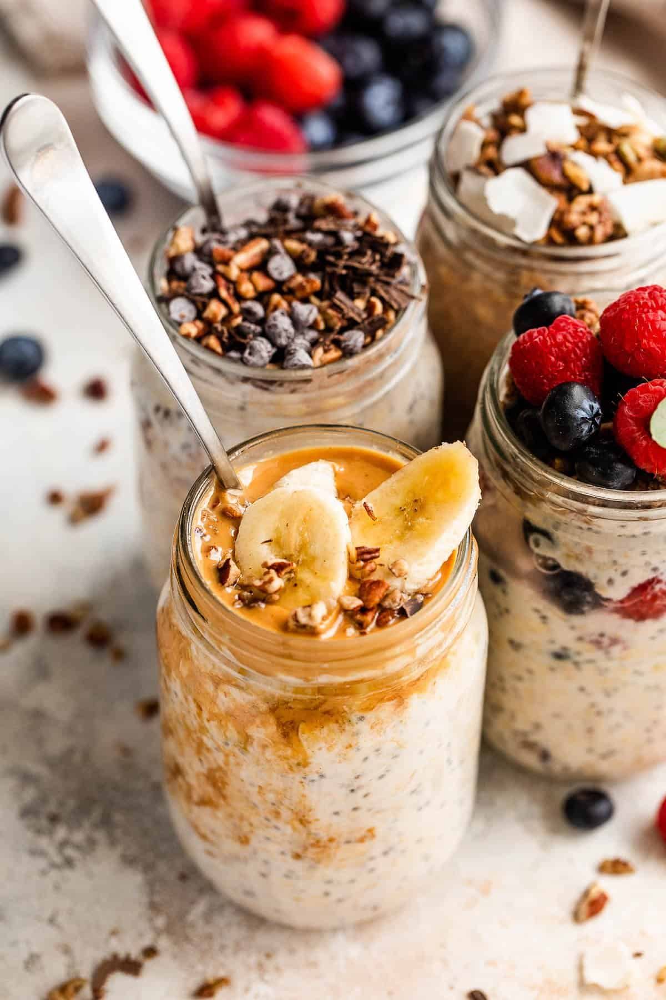

Overnight Oats

This basic overnight oats recipe is formulaic and allows you to customize your oats experience based on your time, ingredients, and preferences.
The following ingredients and instructions make 1 mason jar of oats, but if you are meal prepping, feel free to duplicate to multiple jars!
Ingredients
Oats Base:
- 1 cup Oats
- 3/4 cup Milk of choice (I use almond or soy)
- 1/2 tbsp Chia Seeds
- 1 tbsp Brown Sugar (sweetner of choice, if not using sweetened protein powder)
Oats Upgrades (mix and match):
- 1/2 serving Protein Powder of choice
- 1 tbsp Peanut Butter
- 1/4 tsp Cinnamon
- Pinch of salt
Instructions
- Combine all dry ingredients in a mason jar
- Refridgerate overnight, or for at least 2 hours
- To prepare: microwave 1-2 minutes if desired and add desired toppings (fruit, granola, etc.)
- Enjoy!